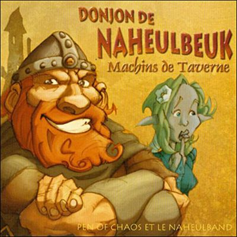
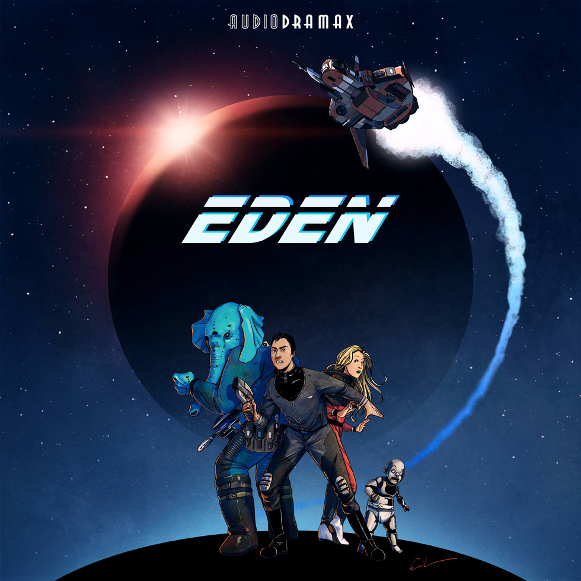

<tr class="row1">
<td class="gen medpad" align="center">
<span id="808"> 16 </span>
</td>
<td class="genmed medpad" align="left">
<a href="https://aghostslife.jimdofree.com" class="topictitle" target="_blank" style="float: left; display: block; padding-top: 4px; padding-left: 4px;"> A Ghost's Life </a>
<a href="http://wiki.netophonix.com/A%20Ghost%27s%20Life" style="float: right; padding-top: 4px;">
<img border="0" title="Plus d'infos sur le Netowiki" alt="Plus d'infos sur le Netowiki" src="./images/wikilink.gif"/>
</a>
</td>
</td>
<td class="genmed medpad" align="center" valign="middle"><span class="gen">Sarausa</span></td>
<td class="genmed medpad" align="center" valign="middle"><span class="gensmall">Fantastique</span></td>
<td class="gennotetab" align="center" valign="top" width="15">
<span class="gennotetab">
<img align="top" valign="middle" border="0" alt="Niveau artistique en jaune et niveau technique en bleu." title="Niveau artistique en jaune et niveau technique en bleu" src="images/jaugeslist.php?art=171&tech=167">
<td class="genmed medpad" align="center" valign="middle">
<span class="gensmall">
<a href="./saga_avis.php?saga_id=808¬es_usid=808&critview=1&startlist=0&saga_seek=&orderlist=ASC&modelist=titres">12 avis</a>
</span>
</td>
</span>
</td>
<td class="genmed medpad" align="center" valign="middle">
<span class="gensmall">104</span>
</td>
</tr>
<tr> du tableau, on créé / met à jour une saga dans la BDD
<item>
<title>Nouveautés :: Network Evil 6 - Arc Chris & Pims - Chapitre IV :: Auteur Kwaam</title>
<link>https://forum.netophonix.com:443/viewtopic.php?f=1&t=18929&p=228153#p228153</link>
<description><![CDATA[Bonjour à tous !Bonjour à tous !On est à l’avant dernier chapitre du périple de Chris & Pims ! Accrochez vous bien parce que ce chapitre vous réserve bien des surprises avec la course poursuite d’Abba qui n’en finit plus. Et que dire pour le prochain et dernier chapitre… Soyez prêt ! Bonne écoute !Après leur rencontre avec Abba, Chris & Pims l'ont poursuivie jusqu'à atteindre un porte avion qui serait sa base d'opération.Spotify : https://open.spotify.com/show/1I6CHnQoMTfAYvWeDUCMdeDeezer : https://deezer.com/show/3889637Apple Podcasts : https://podcasts.apple.com/us/podcast/n ... 1635379871Youtube : https://www.youtube.com/playlist?list=P ... WkO_tRtB28Podcloud : https://podcloud.fr/podcast/network-evil-6Google Podcasts : https://podcasts.google.com/feed/aHR0cH ... Nhc3QvbmU2Page de la série : https://www.wavesavengers.fr/creations- ... /episodes/Flux RSS de l’émission : https://www.wavesavengers.fr/feed/podcast/ne6DISTRIBUTION : https://www.wavesavengers.fr/creations- ... tribution/]]></description>
<author>no_email@example.com (Kwaam)</author>
<category>Nouveautés</category>
<comments>https://forum.netophonix.com:443/posting.php?mode=reply&f=1&t=18929</comments>
<pubDate>Wed, 09 Nov 2022 23:43:58 GMT</pubDate>
<guid isPermaLink="false">https://forum.netophonix.com:443/viewtopic.php?f=1&t=18929&p=228153#p228153</guid>
</item>